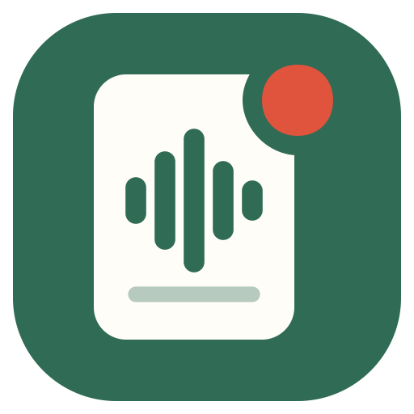
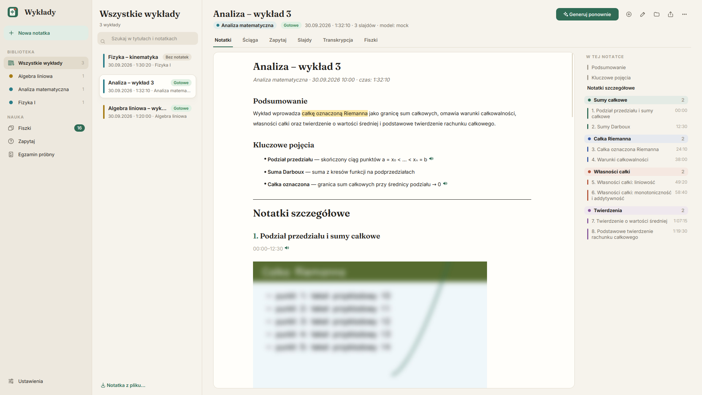

WykładyAplikacja nagrywa dźwięk i slajdy, rozpoznaje mowę i robi z tego notatki, ściągę, fiszki i egzamin próbny. Wszystko działa na Twoim komputerze – bez kont, kluczy API i opłat.

Przy pierwszym uruchomieniu aplikacja sama sprawdza komputer i proponuje jeden z trzech profili. Możesz go potem zmienić w Ustawieniach.
Mniejsze modele, bez notatek na żywo. Notatki powstają po wykładzie – spokojnie, bez zacinania komputera.
Szybszy model mowy i notatki na żywo – po wykładzie dopisuje się tylko reszta.
Najdokładniejsze rozpoznawanie mowy, większy kontekst i dokładniejsze opisy slajdów.
Windows: Windows 10 (1803+) lub 11, ok. 30 GB wolnego miejsca. Mac: komputer z procesorem Apple M1, M2, M3 lub M4 (Maki z Intelem nie są obsługiwane), macOS 12 lub nowszy (nagrywanie na żywo: macOS 14.4 lub nowszy), ok. 20 GB wolnego miejsca – profil dobiera się według pamięci (procesor i grafika dzielą ją). Połączenie z internetem jest potrzebne tylko do pierwszej instalacji i aktualizacji.
Kilka minut klikania, potem aplikacja sama pobiera modele (to trwa dłużej – zależy od internetu).
Aktualizacje: Ustawienia → Aktualizacje → Sprawdź aktualizacje. Notatki, nagrania i ustawienia zostają bez zmian. Pełny opis funkcji: poradnik.